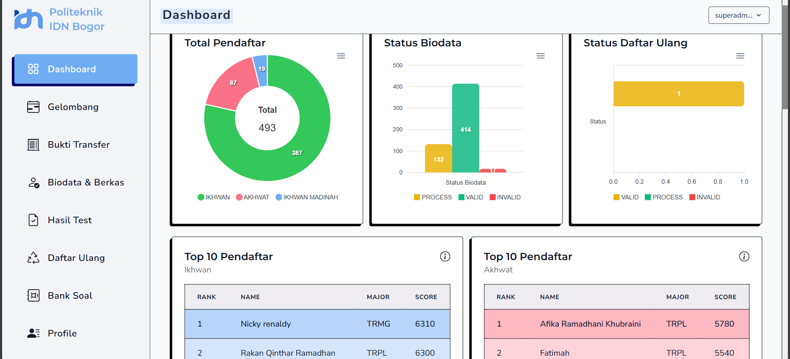
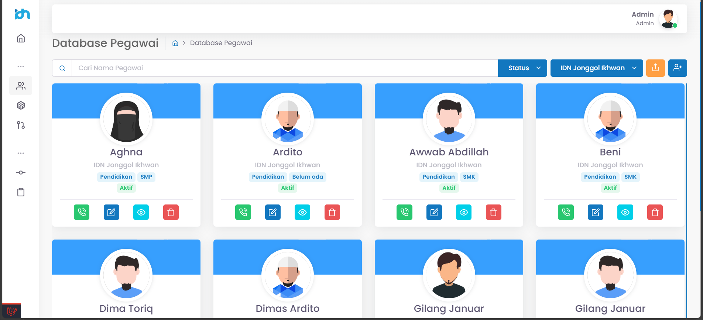

Portfolio Website
Retro-Futurism & Glassmorphism
Selamat datang. Silakan navigasi menggunakan menu di atas.

Muhamad Kurniawan
Berkuliah di Sari Mulia University
wkwkwkwkwkwkwwkw
Tech Stacks
- Tailwind CSS
- Livewire
- Laravel
- Alpine.js
- MySql
Tentang Saya
Selamat datang di situs web saya! 🚀 Saya seorang pengembang yang suka membuat pengalaman web unik yang menggabungkan nostalgia retro-tech dengan fungsionalitas modern dan desain yang elegan.
Keahlian utama saya terletak pada tumpukan TALL (Tailwind, Alpine.js, Laravel, Livewire), yang memungkinkan saya membuat aplikasi web yang dinamis dan reaktif dengan cepat.
Projek-Projek

reff
hanya sebagai contoh

reffff
hanya sebagai contoh
Project Duplikat 1
Deskripsi singkat proyek duplikat untuk contoh.
Project Duplikat 2
Deskripsi singkat proyek duplikat untuk contoh.
Kontak Saya
Jangan ragu untuk menghubungi saya melalui platform berikut:

Sosial Media
Get in touch
Links
- GitHub